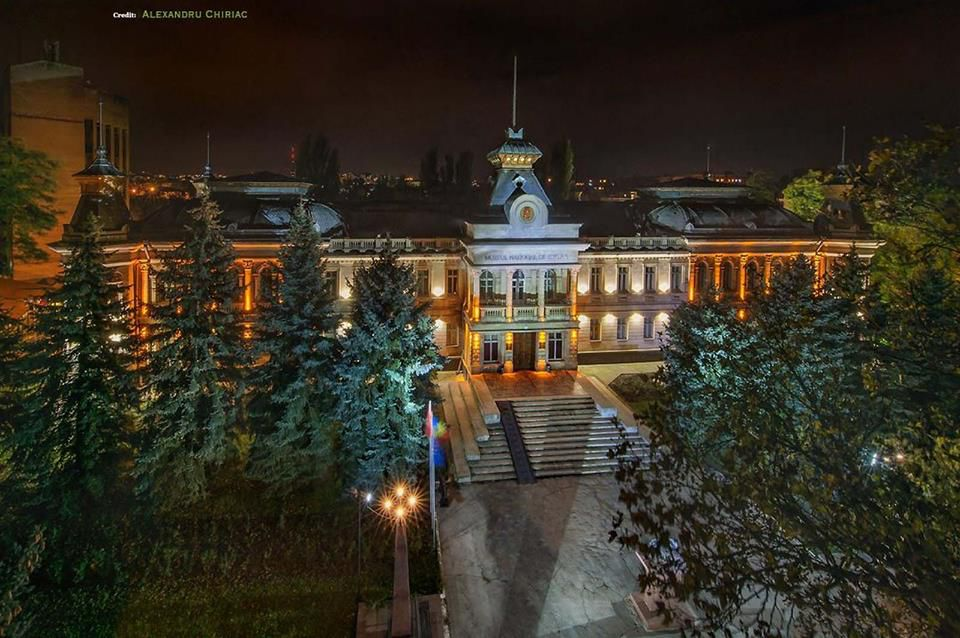
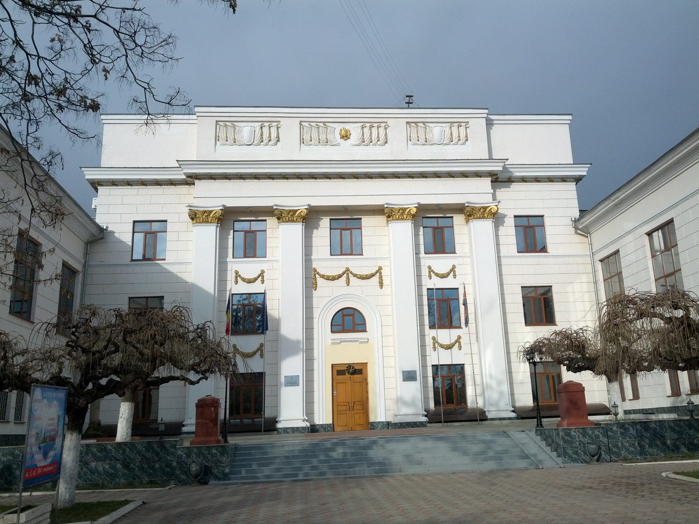

„Educația e cultura caracterului, cultura e educația minții.” - Mihai
Eminescu
Viața este o oportunitate de a te dezvolta, de a te forma, de a vedea
dincolo de linia de
orizont pictată între mare și cer. În fiecare zi, la orizont răsar atât de multe șanse să-ți deschizi
aripile spre un viitor mai bun, alături de următoarele generații. Viitorul nostru va fi prosper numai dacă
ni-l asigurăm noi, acest fapt se realizează prin zidirea educației și culturii noastre. Pe parcursul anilor
multe clădiri se vor risipi, oamenii, așa cum vin, se vor duce , însă valorile poporului nostru - istoria,
arta, limba română - vor rămâne și vor continua să existe. Doar prin păstrarea acestor valori și fapte
semănate de generațiile apuse noi menținem individualitatea națiunii. Noi nu suntem doar un contur
pe hartă — suntem o cultură vie, valoroasă, care merită cunoscută și îmbogățită de noi, cei din prezent!
˖⁺‧₊˚♡˚₊‧⁺˖
Pentru a vă oferi ocazia de a descoperi mai îndeaproape cultura
țării, muzeele din întreaga Republică,
alături de numeroase instituții culturale, vă invită pe data de 17 mai 2025 să pășiți în universul fascinant
al artei și istoriei. Veți putea vizita muzee, galerii de artă spectaculoase, case memoriale și alte spații
culturale, toate pregătite să vă ofere o seară memorabilă și plină de inspirație.
Evenimentul va continua până pe 18 mai, timp în care publicul este încurajat să exploreze patrimoniul
național prin expoziții permanente și temporare, având acces gratuit și posibilitatea de a participa la
activități educative și recreative dedicate tuturor vârstelor.
Lista instituțiilor culturale pe care le veți putea vizita:
1 / 7

Muzeul Național de Istorie a Moldovei
2 / 6
Muzeul Național de Artă al Moldovei
3 / 6
Muzeul Național al Literaturii Române Chișinău
4 / 6

Centrul de Cultură și Istorie Militară (Muzeul Militar)
5 / 6
Muzeul Național de Etnografie și Istorie Naturală
6 / 6
Muzeul Casa Puskin
Descriere
Muzeul Național de Artă al Moldovei
Program extins: 14:00 – 24:00
Acces gratuit în sălile expoziționale
>Program cultural-educațional divers
Programul complet va fi anunțat în curând
Muzeul Național de Etnografie și Istorie Naturală
Expoziție: „Muzeul Casa Părintească – un sfert de veac în beneficiul comunității”
Data: 17 mai 2025, ora 17:00
Context: Aniversarea a 25 de ani a muzeului din s. Palanca, fondat de meșterița
Tatiana Popa
Temă generală: „Viitorul muzeelor în comunități în continuă schimbare”
Muzeul Național de Istorie a Moldovei
Program: 17 mai 2025, între 17:00 – 23:00
Activități:
Podcast expozițional „Belgica”
Atelier de țesut – „Azerkhalcha”
Concert – elevii Școlii de Muzică „Eugen Doga”
Spectacole coregrafice – studenți AMTAP
Atelier „Metalurgia: de la magie la industrie”
Recital de poezie și canto
Music Battle – concert final susținut de Liceul „Serghei Rahmaninov”
Muzeul Național al Literaturii Române
Program: 16:00 – 23:00
Activități:
Vizite ghidate gratuite în cele patru săli de expoziții
Proiecții de film: „Serafim Saka - Basarabia în Gulag”
Atelier pentru elevi: „Cum documentăm o piesă de muzeu?”
Vizite în grădina muzeului – sculpturi și mobilier urban
Muzeul de Istorie a Orașului Chișinău – Turnul de Apă
Program: 12:00 – 23:00
Locație: Str. Alexei Mateevici 60 A
Activități:
Recitaluri și concerte live
Expoziții și ateliere pentru copii
Defileu de modă și târg de artă
Proiecție vizuală spectaculoasă pe Turnul de Apă
Concert de seară cu artiști cunoscuți: Daniel & Lucian Advahov, Cristina Scarlat,
Geta Burlacu,
Elisoa
Cynthia ș.a.


._Foto_3.jpg)

.png)
.png)